"Every record recovered is a name restored."
A Brief Documented Audio History"
The founding
Dr. John Jefferson Smallwood — born enslaved in 1863 — purchased 65¾ acres on the James River in 1891 and opened the Institute on October 12, 1892, with fewer than ten pupils and less than fifty dollars in cash.
Lincoln Memorial Hall
Dedicated May 19–21, 1912 — a four‑story, $41,000 brick hall funded largely by Mrs. John Hay. Dr. Smallwood died four months later, on September 29, 1912, at age 49.
Garvey, the UNIA, and closure
In 1926 the Universal Negro Improvement Association bought the debt‑burdened campus and reopened it as Universal Liberty University. It never recovered from Garvey's imprisonment and the 1929 crash.
The revival
The campus was demolished by dynamite in 1941, but a planned cultural center in Claremont will carry the Institute's name and mission forward.


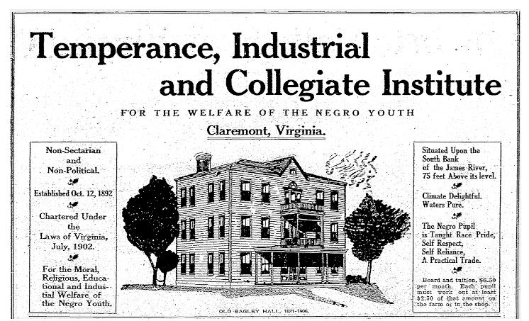
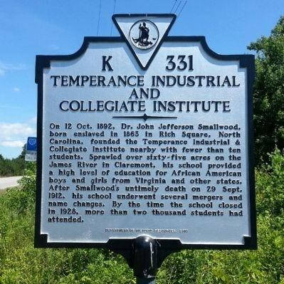
Timeline
Built primarily from the compiled research document (thesis, VCU Libraries, Surry County Historical Society, DHR Marker K‑331, and family‑history sources), cross‑checked against contemporary newspapers where possible. Disputed or unverified points are flagged individually.
First recorded arrival of enslaved Africans in Virginia
Claremont sits near the landing site historically associated with the first recorded arrival of enslaved Africans in English North America — a resonance later drawn out by the Institute's own founding on this ground.
First recorded auction of an enslaved person in bondage
The first recorded African captive sold into bondage in English North America is auctioned at Claremont, Virginia — on the very site Dr. Smallwood would purchase over two and a half centuries later for the Institute.
John Jefferson Smallwood is born enslaved
Born on the cotton plantation of Marcus W. Smallwood in Rich Square, Northampton County, North Carolina, to Mary Eliza and David Jefferson Smallwood. At five months old he was sold away from his parents along with the rest of his family.
Begins the Butler School, age seven
Family tradition holds that plantation owner Marcus W. Smallwood arranged for the seven-year-old to attend the Butler School, a primary department of the Hampton Normal and Agricultural Institute.
Family traditionMarcus W. Smallwood dies
Without a parent, guardian, or financial support, seven-year-old John Jefferson is told not to return to the Butler School. He begins teaching himself to read.
Bound status, court challenge, and escape
By Smallwood's own 1888–90 account: around age 10 he learned he was considered "bound" to his former master until age 21; at 14 he unsuccessfully challenged this in court; after two failed escape attempts and whippings, he succeeded on a third attempt near age 21, walking 125 miles from Scotland Neck, N.C., to Franklin, Va.
Differs from later accountsClaremont Manor becomes Claremont Colony
William Orgain Allen, builder of nearby Bacon's Castle, dies in 1875; his heirs relinquish the Claremont Manor holdings. Joseph Franklin Mancha of Delaware purchases tracts of the former estate for colonization, 1879–1882.
Town of Claremont incorporated
Incorporated with ambitions of becoming a port city to rival Norfolk — an ambition never fully realized, though remnants of the old railroad and boat piers survive today.
Enters Wilbraham Academy
Smallwood enters Wilbraham Academy in Massachusetts with $14 in his pocket, having already lectured on temperance and labor issues throughout New England.
"Was Born a Slave" newspaper interview
A New England newspaper — likely The Boston Globe — publishes an extensive first-person interview with the by-then well-known young orator, detailing his enslavement and self-education. Read the full transcript in the Founder tab.
Purchases the Claremont land
Dr. Smallwood purchases 65¾ acres on the edge of Claremont, Virginia, on the James River, midway between Richmond and Norfolk.
The Institute opens
The Temperance Industrial and Collegiate Institute opens with fewer than ten pupils and less than fifty dollars in cash, holding classes in a dining hall on the property.
"A New Colored Leader"
The Boston Evening Transcript profiles Smallwood and the young Institute for a New England readership.
"He Made Friends"
The Boston Globe covers Smallwood's fundraising success in New England — and a dispute over claims of racial "outrages" used in soliciting donations.
Additional 36 acres purchased
Smallwood purchases 36 more acres, including buildings and a wharf where, by local tradition, the first ship of enslaved Africans had docked.
Sawyer Hall built
Smallwood and his students build Sawyer Hall, a girls' dormitory named for Philetus Sawyer, a U.S. Senator from Wisconsin and a financial supporter.
Susan B. Anthony donates library volumes
Anthony inscribes volumes donated to the Institute's library — one of many notable donor relationships Smallwood cultivated through his lecture tours.
Marries Rosa E. Banks
Dr. Smallwood marries twenty-one-year-old Rosa E. Banks of Richmond, who becomes the Institute's Lady President.
Rosa writes to Vice President Roosevelt
Facing $3,500 in debt with payments due within weeks, Rosa E. Smallwood writes directly to Vice President Theodore Roosevelt asking for help.
Daughter Thelma Evelyn Smallwood is born
Thelma (1901–1948) is the couple's first child.
Formally chartered by Virginia
The Institute receives its formal charter from the State of Virginia, a decade after opening.
"Old Wharf Where the First Slave Sold in Bondage"
The Buffalo Evening News covers the Institute's historic wharf property and its need of repair funds.
Son John J. Smallwood Jr. is born
The same year, a Richmond Times-Dispatch advertisement runs describing the Institute "For the Moral, Religious, Educational and Industrial Welfare of the Negro Youth."
John J. Smallwood Jr. dies in infancy
The couple's son dies before his first birthday.
Noted in genealogical records onlyLincoln Hall built; John Hay Wharf constructed
Smallwood places the building contract with architect Carl Ruehrmund and contractor D. J. Farrar of Richmond. The John Hay Wharf is built in 1911 at a cost of $3,797, per the souvenir programme's own history.
Lincoln Memorial Hall dedicated
A three-day dedication, presided over by Gov. William Hodges Mann, marks the completion of the Institute's largest building — a four-story, 133½ by 49½ foot brick, cement, and stone hall costing $45,987 (plus $15,800–$20,000 for the power house, water plant, and sewerage), funded largely by Mrs. Clara S. Hay. Events include a Sunday consecration service and Baccalaureate sermon, Monday's formal dedication of the hall, electric plant, and John Hay Wharf, an oratorical contest for the William's Prize, a Farmers' Congress, and Tuesday's Commencement Exercises for the Class of 1912. The New York Times and Richmond Planet both cover the event. That same year, a General Electric generating plant begins supplying electricity to the school and the town of Claremont. The original souvenir programme survives — see the Dedication Programme tab.
School property valued at $750,200
Per the souvenir programme, the value of school property at the closing of the school year is recorded as $750,200 — a figure that would make the 1913 receivership crisis, just months later, especially striking.
"I have ruined my health..."
Fifteen days before his death, Smallwood writes: "I have ruined my health and my life trying to complete this work."
Dr. Smallwood dies, age 49
His death certificate lists "adhesion from appendicitis." Funeral services are held at Third Street A.M.E. Church in Richmond; his body is returned to the Institute by steamer for burial. Rosa Smallwood takes up leadership of the school.
Property placed in receivership
Surry County Chancery Court reportedly appoints a receiver over the Institute's property. This episode is not corroborated in the compiled research document used for most of this record; the receiver's identity remains unconfirmed.
Under researchPossible charter reorganization
A separate source suggests Rosa Smallwood may have reorganized the Institute's charter this month — an account that conflicts with other records and remains unresolved.
DisputedNew leadership arrives from Portsmouth
Leadership connected to the Corey Memorial Institute of Portsmouth, Virginia — affiliated with the Norfolk Union Baptist Association — arrives in Claremont as the Baptist General Association purchases the Smallwood Memorial Institute's campus.
Rechartered as Smallwood-Corey Memorial Institute
The school is rechartered as the Smallwood-Corey Memorial Industrial and Collegiate Institute.
Renamed again
Shortened to the Smallwood-Corey Industrial Institute.
Trustees appeal to the UNIA
Struggling against chronic debt, the Smallwood-Corey trustees appeal to Marcus Garvey's Universal Negro Improvement Association for financial help, through Rev. Dr. J. G. St. Clair Drake, who served simultaneously as the Institute's vice president and a UNIA organizer.
The UNIA purchases the campus
The UNIA buys the Claremont property for $7,300 and assumes between $53,000 and $55,000 of existing debt. The campus — valued at roughly $250,000 — includes Lincoln Hall (valued at about $100,000), which the UNIA renames Garvey Hall. The school reopens in September 1926 as Universal Liberty University, with Professor Caleb Robinson as principal and Rev. Dr. St. Clair Drake as vice principal.
First commencement
Universal Liberty University celebrates its first completed academic year, drawing UNIA leadership from around the country.
The university announces it will not reopen
Garvey's imprisonment and deportation fracture UNIA leadership into competing factions, and the 1929 stock market crash delivers a final blow. The Negro World announces the school will not reopen pending reorganization — and it never does.
Campus found dilapidated
A former student and a former professor visit the abandoned campus and find the buildings already deteriorating.
Property sold at auction for $100
The 65¾-acre property is sold at public auction to H. C. Redd of Hanover County, Virginia. Smallwood's memorial monument is relocated to nearby Abundant Life Christian Church.
Remaining buildings demolished
The last campus buildings are demolished by controlled dynamite explosions, bringing a final end to the physical campus that began as Dr. Smallwood's 65¾-acre purchase fifty years earlier.
Historical marker K-331 erected
The Virginia Department of Historical Resources erects marker K-331 at the intersection of Rt. 10 & Rt. 40, Colonial Trail West, Spring Grove, Virginia.
A planned revival
A planned cultural center in Claremont will carry the Institute's name and mission forward, alongside this ongoing community archive project.
Founder: Dr. John Jefferson Smallwood
Enslaved as an infant, self‑taught as a child, and internationally known as an orator by his thirties — before founding one of Surry County's few schools for Black students.
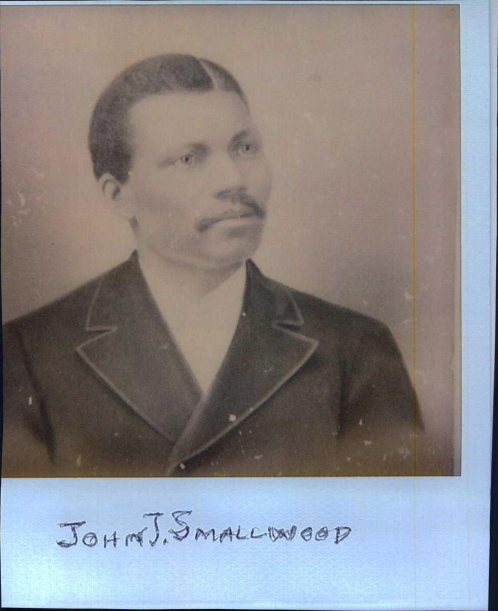
John Jefferson Smallwood
Founder, president, and general financial agent of the Temperance Industrial and Collegiate Institute for its entire twenty‑year existence under his leadership, and — by the account of his own contemporaries — one of the most sought‑after Black orators in New England.
Early life and enslavement
John Jefferson Smallwood was born enslaved on September 19, 1863, on a cotton plantation in Rich Square, Northampton County, North Carolina, to Mary Eliza Smallwood and David Jefferson Smallwood. Family history, recorded in his descendant Mary E. C. Drew's biography Divine Will, Restless Heart, holds that his mother was the daughter of Nat Turner, the enslaved preacher who led the 1831 rebellion in Southampton County, Virginia. While he was still an infant, his parents and siblings were sold away — he later said he was only five months old.
The Butler School and self-education
Family‑history sources hold that in the final months of the Civil War, the plantation owner Marcus W. Smallwood was aided by the young John Jefferson during a confrontation with Union troops, and in gratitude arranged in October 1870 for him — at age seven — to attend the Butler School, a primary department of the Hampton Normal and Agricultural Institute (today Hampton University).
Marcus W. Smallwood died in June 1871. Without a parent, guardian, or financial support, seven‑year‑old John Jefferson was told not to return to the Butler School. Undeterred, he taught himself by reading every newspaper and public speech he could find, and later claimed to have read his copy of Webster's Old Spelling Book a hundred times over.
Education and life abroad
He went on to attend Hampton Institute, Shaw University, and Wesleyan Academy in Wilbraham, Massachusetts, and later lectured and studied abroad in England, France, and Germany — by some accounts conceiving the idea for his own school while studying at Trinity College, London. He earned a Ph.D. and was ordained a minister, and by the time he founded his school he was already recognized as one of the most eloquent African American orators in America and England. A contemporary newspaper interview described his oratory as "dignified and graceful," suggestive of Frederick Douglass, and quoted friends who believed that "in time he will surpass Douglass."
Founding the Institute
On August 11, 1891, Dr. Smallwood purchased 65¾ acres on the edge of Claremont, Virginia — a town with a port on the James River, situated midway between Richmond and Norfolk. There, on October 12, 1892, he opened the Temperance Industrial and Collegiate Institute with fewer than ten pupils and less than fifty dollars in cash, holding classes in a dining hall on the property. The school was formally chartered by the State of Virginia in July 1902.
The institution's earliest name — the Temperance Industrial and Collegiate Institute — reflects a curriculum that clearly integrated both vocational and classical courses. Its mission, as stated in its Circular of Information, was to:
"give its students a thorough mental, moral, industrial and religious training."
An 1906 advertisement in the Educational Section of the Richmond Times‑Dispatch described the same mission more pointedly — "For the Moral, Religious, Educational and Industrial Welfare of the Negro Youth" — and warned that:
"Smoking, Chewing Tobacco, Drinking Whiskey, Fighting, Laziness and Impure Living Will Not be Tolerated in Any Pupil."
Marriage and family
On September 20, 1900, Dr. Smallwood married twenty‑one‑year‑old Rosa E. Banks, daughter of Mat and Phyllis Banks of Richmond, Virginia. Rosa served as the Institute's Lady President and was described in the contemporary Black press as a brilliant essayist and a gifted scholar in her own right — in March 1901 she wrote directly to Vice President Theodore Roosevelt seeking emergency financial help for the school (see Archive). The couple had two children: a daughter, Thelma Evelyn Smallwood (1901–1948), and a son, John J. Smallwood Jr. (1906–1907), who died in infancy.
Death and memorial
Dr. Smallwood died on September 29, 1912, at age 49 — roughly four months after Lincoln Memorial Hall's dedication. His official death certificate listed the cause as "adhesion from appendicitis," though his Claremont neighbors believed it was the result of his having poured every piece of himself into the school he built, a belief he himself seemed to anticipate, having written on September 14, 1912:
"I have ruined my health and my life trying to complete this work."
Funeral services were held at Third Street African Methodist Episcopal Church (now Bethel A.M.E.) in Richmond, with eulogies delivered by George R. Hovey, president of Virginia Union University, and John Mitchell Jr., editor of the Richmond Planet. His body was returned to the Institute by steamer for burial. His gravestone, erected by friends and patrons, is inscribed "Founder and President of the Temperance, Industrial and Collegiate Institute" and "My work is finished."
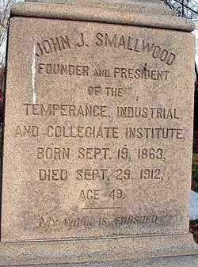
Dr. Smallwood's gravestone
Click to view all three inscriptions.
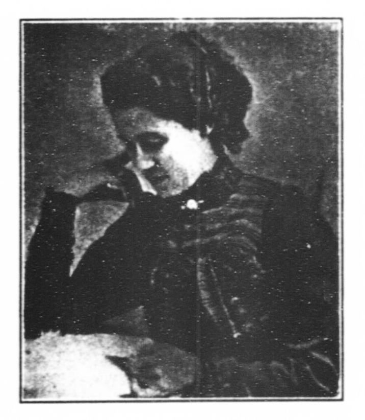
Rosa E. Banks Smallwood
The Institute's Lady President, who succeeded her husband as head of the school after his death in 1912.
Read the full 1888–1890 newspaper interview: "Was Born a Slave"
Transcription of a contemporary newspaper interview, likely The Boston Globe, based on internal references to "The Globe." This is Smallwood's own first‑person account, containing biographical detail — including the name of the slave trader who separated his family (A. B. Frutrel) and his mother's purchaser (John B. Johnson of El Paso, Texas) — not found in any other source in this record. See the note above on where it differs from later family‑history accounts.
WAS BORN A SLAVE. Former Owner Still Claimed Him After War. Career of Brilliant Young Colored Orator. Triumphs Won by J. J. Smallwood in Face of Obstacles.
Probably the best known young colored man in New England today is Mr. John Jefferson Smallwood. For the past four years he has been upon the platform, giving lectures upon the American colored man. That he is successful as a lecturer and popular as an orator is apparent from the fact that wherever he is announced to lecture, the houses are invariably filled.
He was born a slave, and when only five months old was torn from the arms of his mother, who was sent eventually to El Paso, Tex. From that day he never saw her until about a year ago, when he discovered her whereabouts, after the manner resorted to by freedmen who since the war have sought to reunite their scattered families, by continuous advertising.
In the meantime, Mr. Smallwood endeavored to so educate himself as to be able to rightly set forth the wrongs perpetrated upon his race. Hence he can be called a self‑made man. But through the broader knowledge which cultivated intelligence brings, Mr. Smallwood has not stopped at the race question, but has entered upon the agitation of temperance and labor, topics affecting American citizens, white and colored.
His style of oratory, which is dignified and graceful, is suggestive of that of Hon. Frederic Douglass, and his friends, of whom he has a host, numbering among them some of the leading men and women in New England, say that in time he will surpass Douglass. His voice is very deep. In speaking he uses many gestures, and illustrates and emphasizes his argument with witty anecdotes. He stands about 5 feet 8 inches. He is well built, his shoulders are square and he has a well‑formed head. His complexion is brown and he has expressive brown eyes.
Wilbraham, Mass., is Mr. Smallwood's New England home. At present he is visiting the family of William A. Smith of Randolph, where a visit was made to him a few days ago. When told that a request had been made by many readers of The Globe for a sketch of his life he said:
"There are, indeed, in New England many friends of mine who are truly interested in my welfare. How different it is now from when I first set my feet on New England soil. I thought that liberty dwelt on every tree top, mountain and valley, that everywhere here a man was a man. But after nine months' residence in Massachusetts I awoke to the fact that the spirit of prejudice against one of my race was almost as deep here as in Virginia.
"My awakening came about in this manner. When I first went to Greenfield, Mass., I was employed by a publishing company, and was to receive a certain sum per day and my board for my services. After I had worked there about nine months my employer told me he had concluded that I was objectionable to white help in his employ on account of my color. I was disheartened at first, but I took my money and returned South to Virginia. Since I have become more widely known there are undoubtedly many up there who wish they had not objected. But, after all, they knew not what they did. For New England and her people, with but few exceptions, I can only speak in the highest praise.
"I was born Sept. 19, 1863, a slave upon the plantation of Hon. Marcus W. Smallwood of Northampton, N. C., who was at that time representative to Congress from the second congressional district. His plantation was the largest cotton plantation in eastern North Carolina and was worked by hundreds of slaves. It was 25 miles from a railroad and 10 miles from a steamboat landing, the nearest river being the Roanoke. This district now, by the way, is represented by a colored man, Hon. H. P. Cheatham.
"My parents' names were David Jefferson and Mary Elizabeth Smallwood. The slaves usually took the names of the masters upon whose plantations they worked. I am the youngest of eight children, five sisters and three brothers. When I was a babe 5 months and 10 days old, both of my parents were sold to a slave trader named A. B. Frutrel and carried to Birmingham, Ala., where they were separated. My mother was sold to John B. Johnson of El Paso, Tex. She never saw my father again. He was carried to Louisville, Ky., where he was afterward sold, and what became of him I have never learned, for I can trace him no farther.
"A little over a year ago I found my mother, who had with her two of my sisters at El Paso. Of the rest of our scattered family I have not yet learned the whereabouts. This is only an instance of the hundreds of colored families who through cruel slavery have become scattered. It is true that some have become reunited, but the majority never will meet their loved ones again.
"After my parents were taken away from me I was left on the plantation in the care of the 'mammies.' The war had closed and on every hand the wildest desolation prevailed. At the age of 10 years, after having been permitted to roam around the plantation at will, I found that my former master claimed that I was bound to him until I was 21. At the age of 14 years I questioned this right in court. It was decided that as my master was a man of undoubted integrity that right was unquestioned, and I must stay with him until I was 21 years old. Twice I attempted to run away, but was caught and rebuked with a whipping. The third time I attempted I was nearly 21 years old. This time I was successful, and walked from Scotland Neck, N. C., to Franklin, Va., a distance of 125 miles.
"When I was about 13 years old I accidentally got hold of an old Webster's spelling book. With this book, and in secret, I learned the alphabet, and then to form letters into words.
"While at Franklin I began a temperance movement, which assumed large proportions. At one of my meetings there was present a young man named William B. Davis of Malden, Mass. He came to me at the close of the meeting and said: 'Why don't you go North and educate yourself?' I replied that I had neither money, parents nor friends to help me, and that Bryant Farmer, my employer, had failed to pay me in cash and there was no way of my getting North.
"He then gave me the address of Ira G. Ross, pastor of the First M. E. church, Greenfield, Mass., and told me to write to that gentleman, as he was interested in the general welfare of my race. As I had learned to write during my leisure hours while at work, I wrote to Mr. Ross. He in reply told me to come to New England, and after learning my financial condition sent me $25. With this same sum I reached Greenfield, Mass. Dr. Crowell of Lynn, hearing how I was treated there, became my benefactor.
"In 1886 I entered Wilbraham Academy with $14 in my pocket. That same year I returned to Franklin and became engaged in the local option contest in the second congressional district of that State. I was put in nomination for Congress against Mahone, but declined the honor, until I have become an educated man. After being mobbed in Virginia, I returned North and resumed my studies, aiding myself by lecturing in various churches and other organizations throughout New England, lecturing upon the American…" [article continues beyond this clipping]
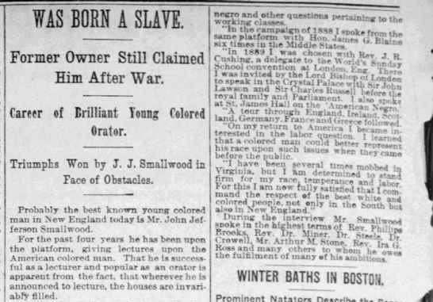
Headline & opening
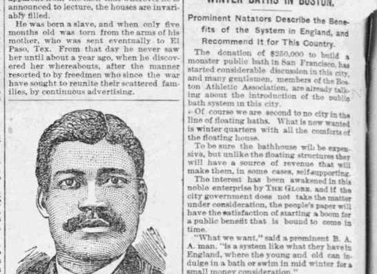
Full scan, cols. 1–2
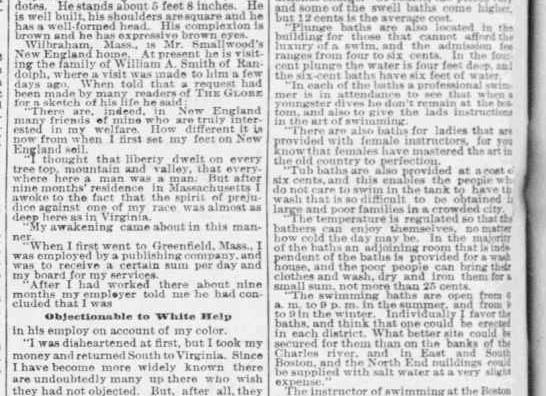
Full scan, cols. 3–4
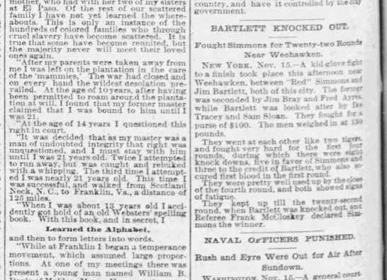
Full scan, cols. 5–6
Campus & Curriculum
A self-sufficient working campus that paired classical, collegiate coursework with industrial and agricultural training — an unusual hybrid for its era.
From Claremont Manor to Claremont Colony
The land Dr. Smallwood eventually purchased had passed through several owners shortly before his arrival. William Orgain Allen, the first builder and owner of nearby Bacon's Castle, died in 1875, and his eldest son — also named William — settled in New York and relinquished the family's Claremont Manor holdings. Between 1879 and 1882, Joseph Franklin Mancha of Delaware — for whom Mancha Drive is named — purchased tracts of the former Claremont Manor estate from the Allen family for colonization purposes. The town of Claremont was formally incorporated on January 16, 1886, with ambitions of becoming a port city to rival Norfolk; though that larger ambition was never realized, remnants of the old railroad and boat piers survive today.
Buildings and infrastructure
By the time of Dr. Smallwood's death, the campus had grown to more than sixty‑five acres along the James River and encompassed fourteen buildings. Lincoln Memorial Hall, the Institute's largest academic building, was a four‑story brick structure appraised at $41,000 in 1912 and covered at the time by both The New York Times and the Richmond Planet. Bagley Hall stood among the residential and instructional buildings sited along the bluffs of the James River. Dr. Smallwood also installed a General Electric generating plant on campus in 1912, complete with street lights, poles, transformers, and meters — supplying electricity not only to the school but to the surrounding town of Claremont for years afterward. Because the Institute operated without public funding for its entire thirty‑six years, Dr. Smallwood personally carried the burden of keeping it financially afloat, traveling widely to lecture and raising substantial sums from donors.
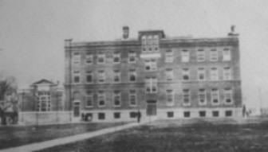
Lincoln Memorial Hall
Dedicated May 19–21, 1912; renamed Garvey Hall by the UNIA in 1926.
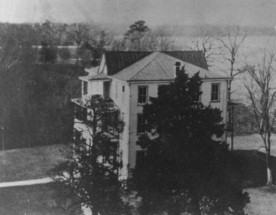
Bagley Hall
Sited above the riverbank in Claremont, overlooking the James River.
Industrial department
Industrial and agricultural training formed a significant part of the Institute's program. The first major capital expenditure — funds raised by Smallwood through years of lecturing — went specifically toward the school farm. Treasurer Emmet Ellis wrote that "the institution has a good farm fronting the James River, upon which is cultivated corn, potatoes and vegetables." The campus operated as a largely self‑sufficient community, combining academic halls with working industrial and agricultural operations that fed, housed, and trained its students: a mattress‑making facility, a canning operation, a saw mill, a working farm, a shoemaking operation, a printing press producing the school's own newspaper, and dormitory rooms for resident students. An inventory of school property taken after Smallwood's death lists livestock, farm implements, and crops of peanuts and potatoes.
| Young women | Young men |
|---|---|
| Plain sewing and fancy needlework, cooking, laundering, house cleaning | Farming, shoemaking, and other vocations |
According to Ellis, the school existed "to teach the Negro self‑reliance, race pride and a practical trade, to establish…various industries, house cleaning and scientific cooking, general laundry work upon a business scale."
Collegiate department
A notable feature that distinguished Smallwood's school from strictly industrial schools like Hampton was its robust collegiate curriculum. The school offered three years of high‑school training in addition to four years of college coursework, with students required to take courses including English Literature, Natural Philosophy, and Political Economy. Students came not only from nearby Virginia towns but from as far away as New York City, Washington, D.C., and Louisville, Kentucky. The word "Normal" was conspicuously absent from the school's name, indicating that administrators chose not to emphasize teacher education as the school's primary purpose — even though some graduates did become teachers.
Graduate outcomes, 1892–1903
Treasurer Ellis recorded the following occupational outcomes for graduates in the school's first eleven years of operation. This diversity of outcomes reflects the Institute's hybrid industrial‑collegiate mission; across its full history, more than 2,000 students passed through the school in total.
| Number | Occupation |
|---|---|
| 59 | Purchased farms |
| 17 | Tradesmen of various kinds |
| 12 | Grade school teachers |
| 8 | High school teachers and hotel waiters |
| 7 | Ministers of the Gospel |
| 4 | Blacksmiths |
| 3 | Carpenters |
| 2 | Doctors |
| 2 | Temperance lecturers |
| 1 | Lawyer |
Governance and the Monthly Advocate
The Institute published its own school newspaper, The Monthly Advocate, printed on the campus's own press and giving students hands‑on training in typesetting alongside the school's other trades. The Institute was governed by a Board of Trustees drawn from Virginia, New York, and North Carolina, reflecting the geographic reach of Smallwood's fundraising network.
| Name | Role | Location |
|---|---|---|
| Rev. John J. Smallwood | President | Claremont, Va. |
| P. Emmett Ellis | Treasurer | Scotland, Va. |
| John W. Peterson | Trustee | Buffalo, N.Y. |
| Geo. W. Thomas, Sr. | Trustee | Smithfield, Va. |
| Hon. W. B. Clark | Trustee | Newport News, Va. |
| Hon. J. E. Farrell | Trustee | Claremont, Va. |
| Hon. Wm. W. Lawrence | Trustee | North Carolina |
| Mrs. E. M. Combs | Trustee | Claremont, Va. |
P. Emmett Ellis, listed here as Treasurer of Scotland, Virginia, is very likely the same Emmet Ellis whose written accounts of the Institute's farm, industries, and graduate outcomes are quoted throughout this record.
Fundraising and donors
Like most African American schools of the era, the Institute relied exclusively on the largesse of individual donors rather than a major benevolent organization. Smallwood lectured throughout the United States and abroad, writing countless fundraising letters to acquaintances and public figures, including John Milton Hay (former U.S. Ambassador to Great Britain and Secretary of State, and a financial donor whose wife funded Lincoln Memorial Hall), Henry Cook of Lenox, Massachusetts, Emily Howland, Catherine Peterson, Susan B. Anthony (who inscribed donated volumes to the Institute's library in 1896), and Elizabeth Cady Stanton and Frederick Douglass, among Smallwood's fundraising correspondents. The school was chronically in debt throughout its existence, and this financial pressure meant that donor preferences inevitably influenced its educational direction.
Historical significance
Historian Benjamin Swenson argues that the Institute "arguably forged a unique model of education by integrating distinct combinations of both academic and industrial training." Rather than strictly following the Hampton‑Tuskegee model of industrial education or the classical curriculum championed by W. E. B. Du Bois, Smallwood's school blended both — reflecting the broader, contested landscape of African American education in the post‑Reconstruction South. The location carried its own historical resonance: Claremont sits near the landing site associated with the first recorded arrival of enslaved Africans in Virginia in 1619, and Smallwood himself was, by family tradition, a direct descendant of Nat Turner — linking his project of Black education and uplift to the region's deepest histories of bondage and resistance.
Archive
Primary sources and documents recovered so far. Click any image to enlarge; multi-image documents can be paged through.
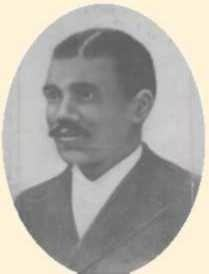
Dr. John J. Smallwood
A signed portrait of the Institute's founder.

Lincoln Memorial Hall
The main hall building, dedicated May 19–21, 1912; appraised at $41,000.

Bagley Hall
One of the Institute's original buildings, sited above the riverbank overlooking the James River.

"For the welfare of the Negro youth"
An original recruitment advertisement for the Institute, featuring Old Bagley Hall (1892–1906).
Dedication of Lincoln Memorial Hall
Published by the Institute, printed by John Mitchell, Jr. in Richmond. May 19–21, 1912.
Held by one library worldwide (CARLI/I‑Share, Illinois) — not yet digitized.
Letter to Theodore Roosevelt
Rosa E. Smallwood's March 18, 1901 letter to the Vice President, appealing for emergency financial help.

Rosa E. Banks Smallwood
The Institute's Lady President, who led the school after her husband's death in 1912.

Dr. Smallwood's gravestone
"Founder and President... My work is finished." Erected by friends and patrons.
3 photographs — click to browse

Virginia DHR Marker K‑331
Erected 2010 at the intersection of Rt. 10 & Rt. 40, Colonial Trail West, Spring Grove, Va.
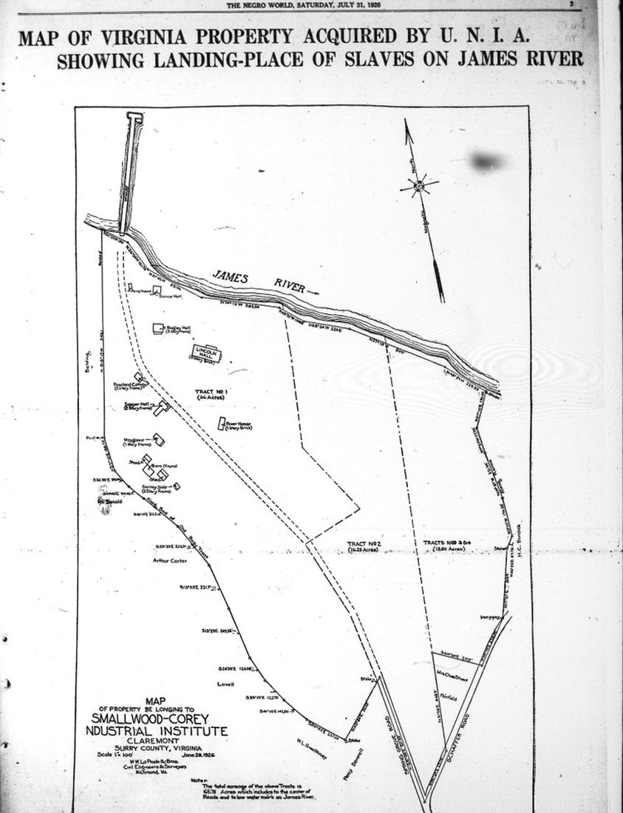
UNIA property map, 1926
"Showing Landing‑Place of Slaves on James River." Surveyed by W. W. LaPrade & Bros.; published in The Negro World, July 31, 1926.
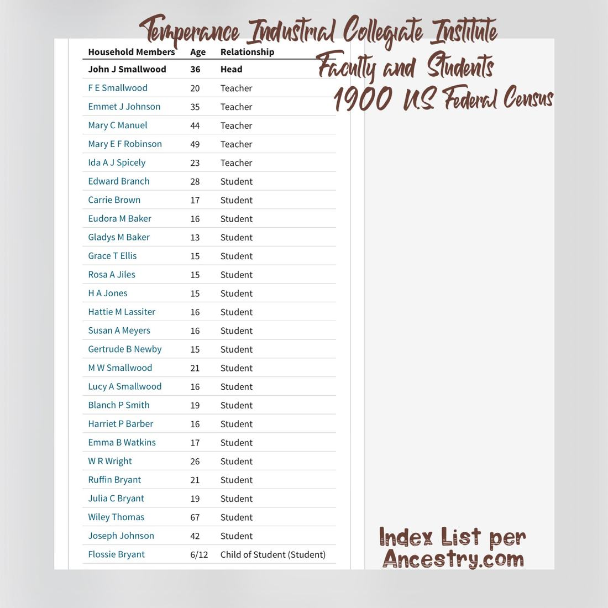
Faculty & students, 1900
U.S. Federal Census household listing for the Institute, including five teachers and more than a dozen resident students.
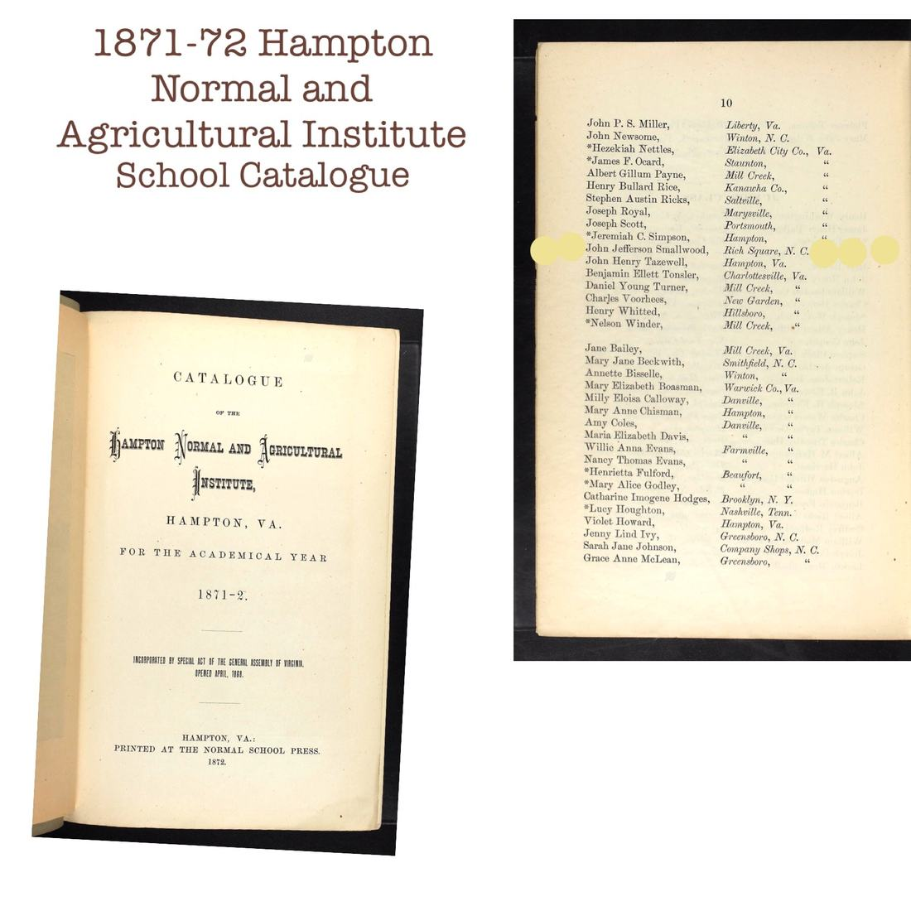
Hampton Normal & Agricultural Institute, 1871–72
Lists "John Jefferson Smallwood, Rich Square, N.C." among enrolled students.
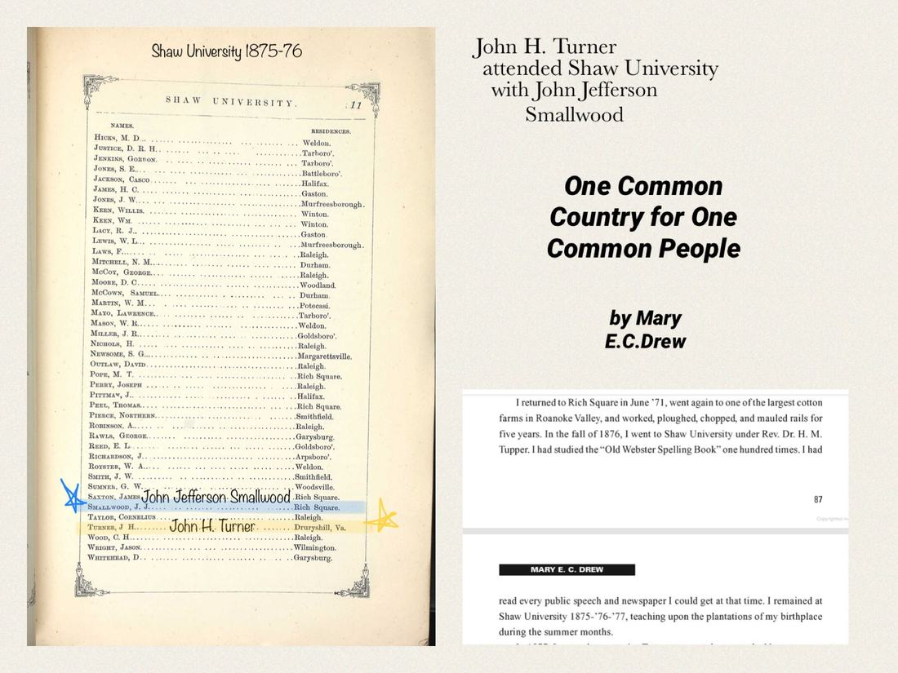
Shaw University, 1874–76
Roster listing John Jefferson Smallwood alongside classmate John H. Turner.
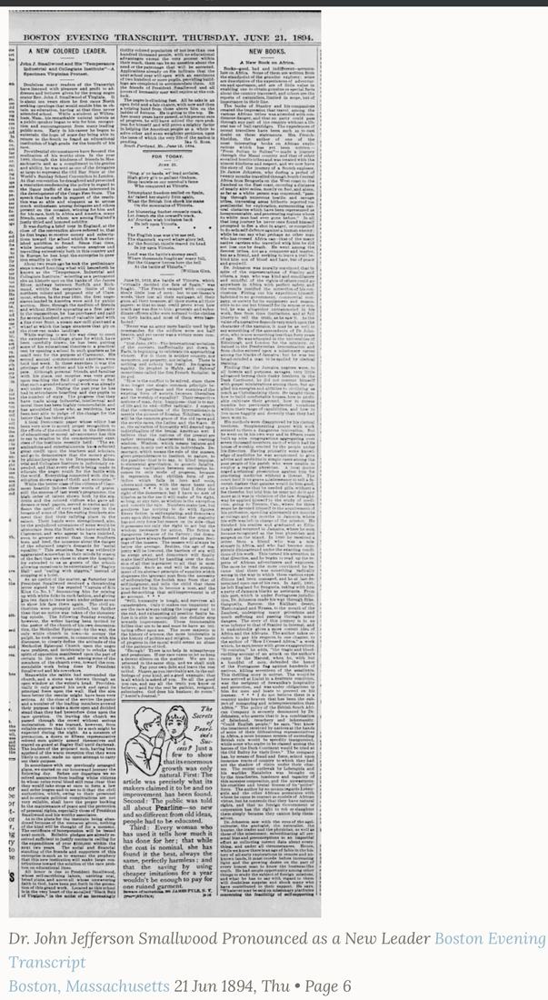
"A New Colored Leader"
Boston Evening Transcript, Boston, Mass., June 21, 1894, p. 6.
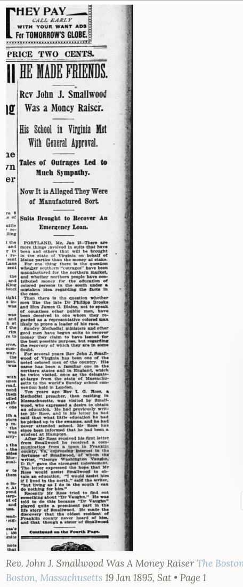
"He Made Friends"
The Boston Globe, Jan. 19, 1895, pp. 1 & 4 — on Smallwood's fundraising and a dispute over an "outrage" claim.
2 pages — click to browse
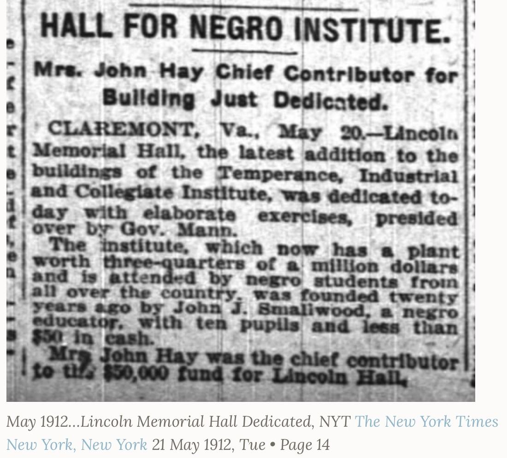
"Hall for Negro Institute"
The New York Times, May 21, 1912 — on the dedication of Lincoln Memorial Hall and Mrs. John Hay's $50,000 gift.
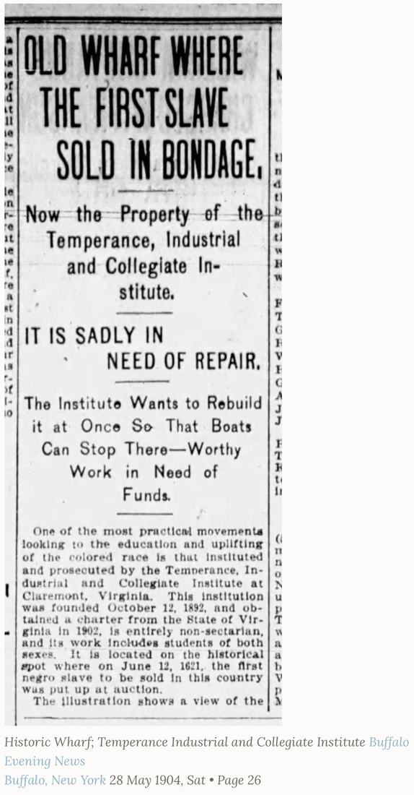
"Old Wharf Where the First Slave Sold in Bondage"
Buffalo Evening News, May 28, 1904 — on the historic wharf on Institute property and its need of repair.

"Was Born a Slave" (c. 1888–90)
Smallwood's own first-person account of his enslavement and early life. Full transcript in the Founder tab.
7 images — click to browse
1913 receivership filing
Surry County Chancery Court record placing the Institute's property under receivership.
Not corroborated in the compiled research document — receiver's identity pending confirmation.
Claremont Plantation record
Documentation of enslaved men from Claremont Plantation, tied to a Civil War‑era incident at Jamestown Island.
The Allen family of Surry County
William Orgain Allen and the Allen family held an estimated 800–1,000 enslaved people across five counties, making them the dominant plantation holders in the region surrounding the Institute.
John H. Ellis, landowner
A free Black landowner in Surry County whose life and property offer context for the community the Institute was founded to serve.
Read the full transcription: Letter to Vice President Theodore Roosevelt (March 18, 1901)
Claremont, Va., March 18, 1901. Hon. Theodore Roosevelt, Vice Pres. U.S.A.
My dear Mr. Vice President:
You will excuse me please, for the seeming presumption, if I dare, honored Sir, to send you this letter. I am a Negro woman at the head of the Institution named above which, as you know was founded by my faithful husband, Oct. 12/92.
The Institution itself is an interesting piece of Virginia and National history founded upon moral, industrial, and religious lines, operated by a young man with double his will, in the face of White Caps, Ku‑Klux and shot guns. My husband planted this young, industrial, Scientific and classical Institution upon the very spot where his mother was sold as a slave and where his grandfather was shot because he would not allow his overseer to whip his wife in his presence.
No living soul can imagine what we have passed through here since '92. We owe $3500. It must be paid April 1, April 15, May 15th, respectively. We write to ask you to help us meet these obligations, please.
The letterhead lists the school year as nine months and fifteen days, board and tuition at $6.50, and a request for $10,000 and 65,000 feet of lumber to begin the new Industrial Hall — plus a saw mill, farm implements, and a printing press.
1912 Dedication Programme
The original souvenir programme for the three-day dedication of Lincoln Memorial Hall, May 19–21, 1912 — recovered as a scanned copy after being listed by WorldCat as held by only one library worldwide. Printed by John Mitchell, Jr., Richmond, Va. Click any image to enlarge.
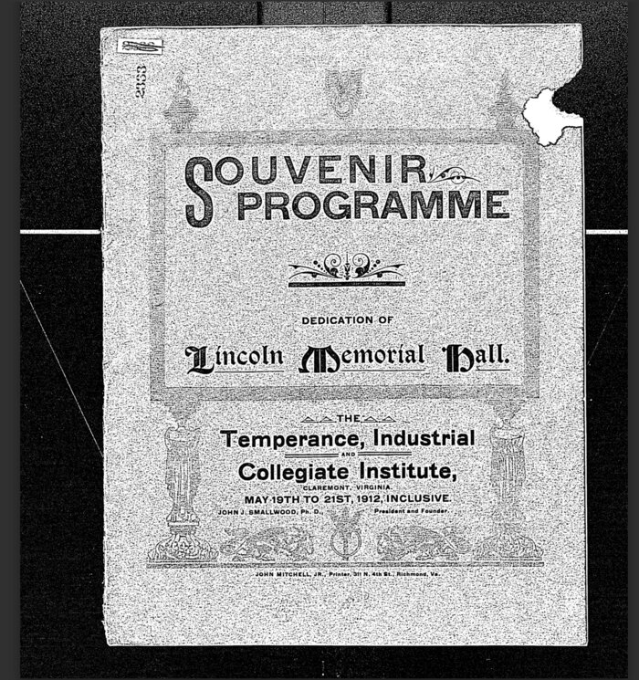
Cover, Souvenir Programme (1912)
“Souvenir Programme. Dedication of Lincoln Memorial Hall.” Printed by John Mitchell, Jr., Richmond, Va. — previously believed held by only one library worldwide; a scanned copy has now been recovered.
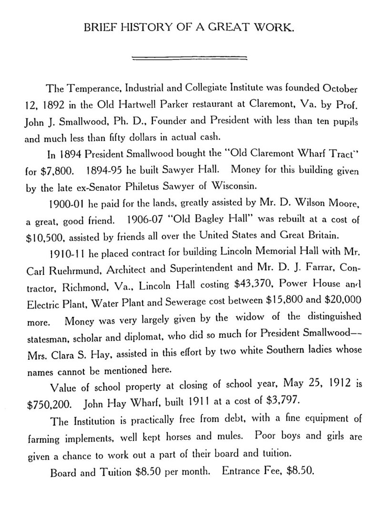
“Brief History of a Great Work”
The programme’s own institutional history: founding in 1892, the 1894 wharf tract purchase, Sawyer Hall (1894–95), the Bagley Hall rebuild (1906–07), and the construction of Lincoln Memorial Hall (1910–11), funded largely by Mrs. Clara S. Hay.
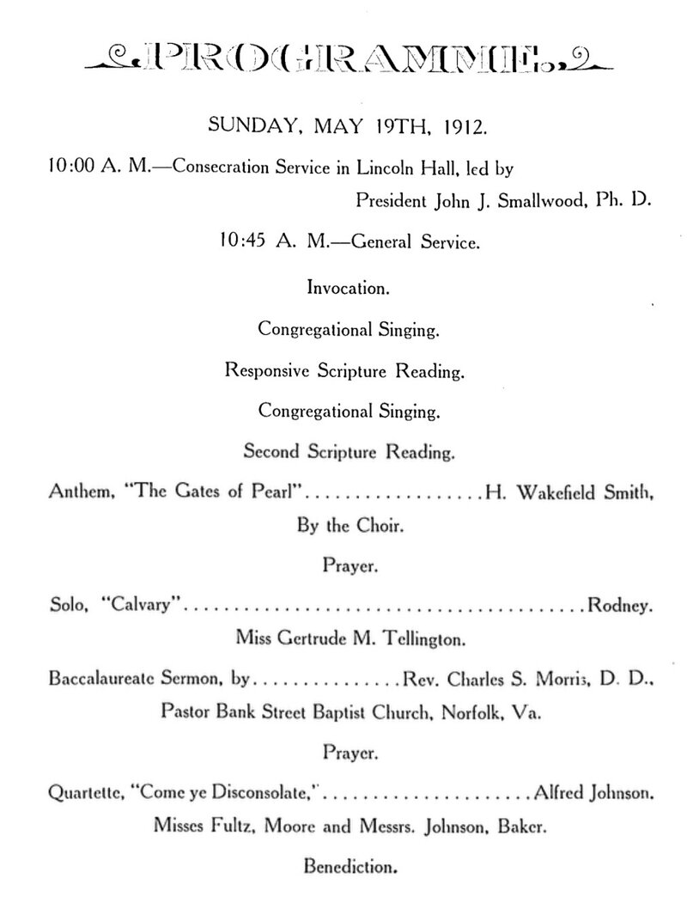
Programme, Sunday May 19th
Consecration service and General Service in Lincoln Hall, led by President John J. Smallwood; Baccalaureate Sermon by Rev. Charles S. Morris of Norfolk.
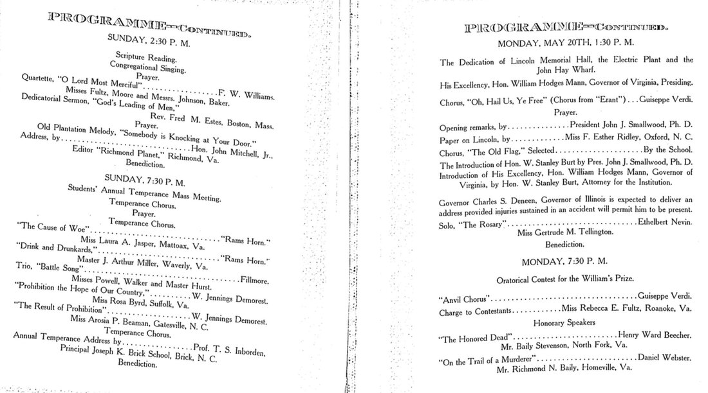
Programme, Sunday 2:30 – Monday 1:30
Sunday afternoon and evening sessions, then Monday’s formal dedication of Lincoln Memorial Hall, the Electric Plant, and the John Hay Wharf — with Gov. William Hodges Mann of Virginia presiding.
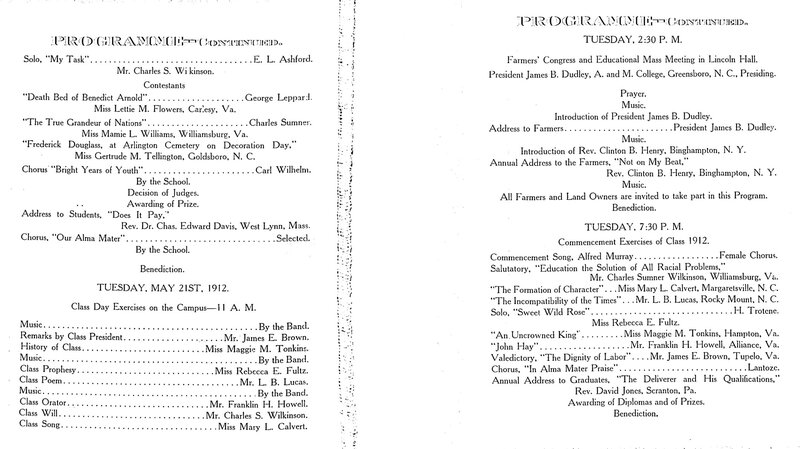
Programme, Monday evening – Tuesday
The William’s Prize oratorical contest, the Farmers’ Congress, and Commencement Exercises for the Class of 1912 (valedictorian James E. Brown, salutatorian Charles Sumner Wilkinson).
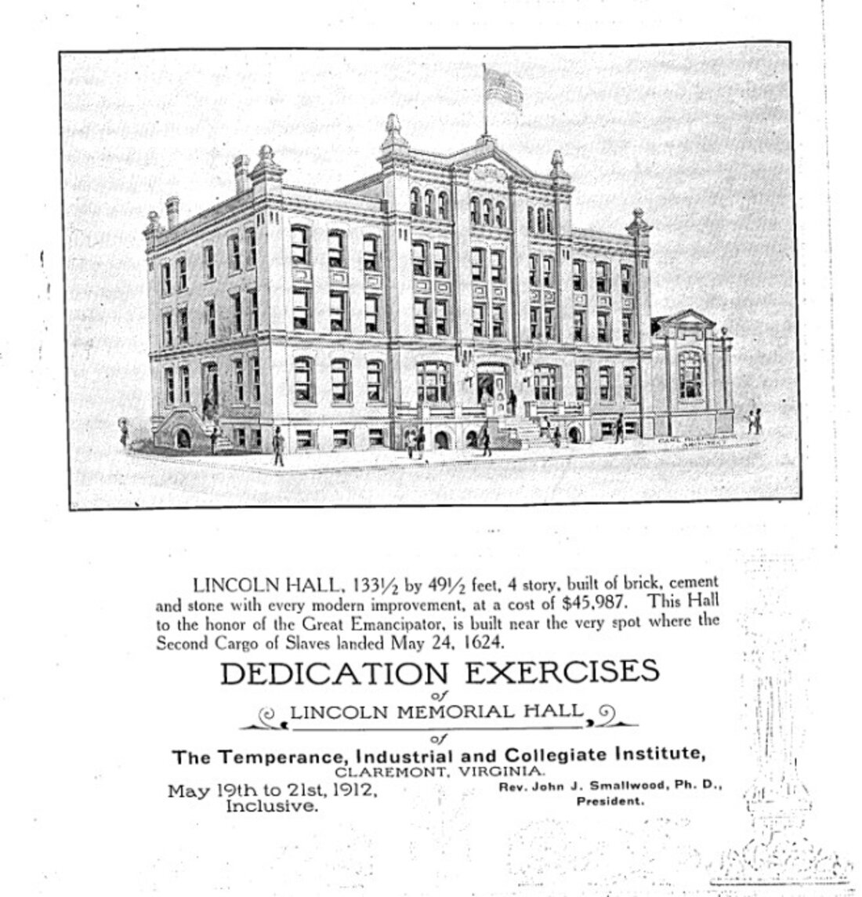
Lincoln Hall, dedication exercises
“Lincoln Hall, 133½ by 49½ feet, 4 story, built of brick, cement and stone … at a cost of $45,987. This Hall, to the honor of the Great Emancipator, is built near the very spot where the Second Cargo of Slaves landed May 24, 1624.”
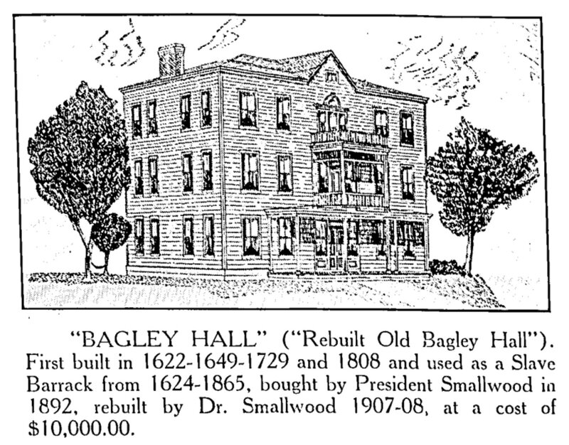
“Bagley Hall” (before rebuilding)
“First built in 1622–1649–1729 and 1808 and used as a Slave Barrack from 1624–1865, bought by President Smallwood in 1892, rebuilt by Dr. Smallwood 1907–08, at a cost of $10,000.00.”
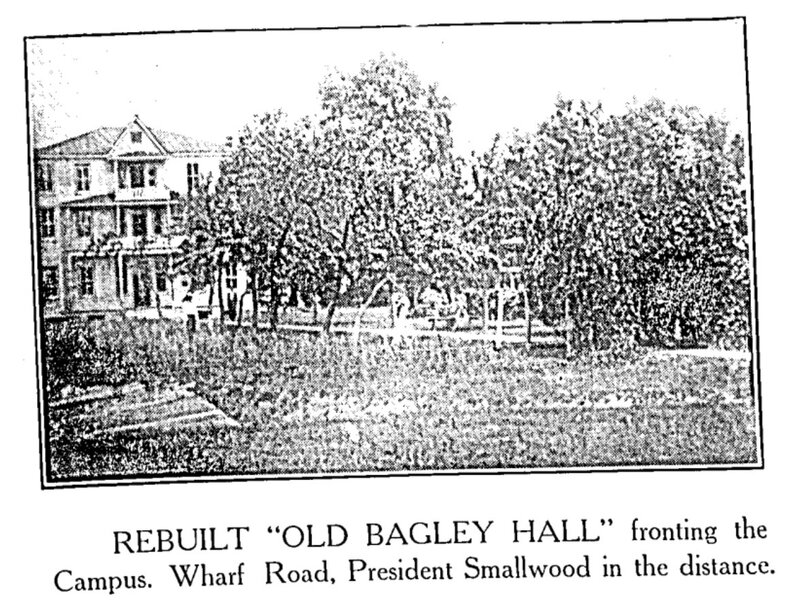
Rebuilt “Old Bagley Hall”
The rebuilt Bagley Hall fronting the campus, with Wharf Road and President Smallwood visible in the distance.
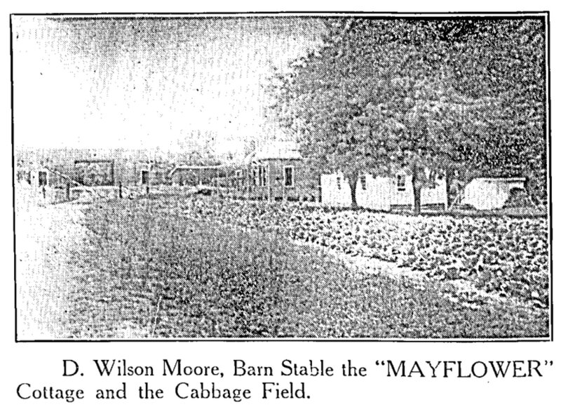
D. Wilson Moore, Barn, “Mayflower” Cottage
The barn stable, the Mayflower Cottage, and the cabbage field — named for D. Wilson Moore, credited in the programme as a major benefactor who helped pay off the Institute’s land in 1900–01.
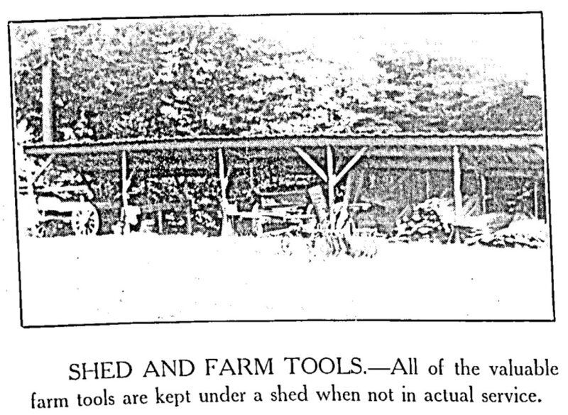
Shed and farm tools
“All of the valuable farm tools are kept under a shed when not in actual service” — part of the programme’s documentation of the Institute’s working farm.
Community submissions
Share a family story, photograph, or record. Submissions are reviewed before publication.
Every submission is checked against existing research before it's added to the archive.
Support the project
Funding the documentary, the archival research behind it, and the effort to carry the Institute's name and mission forward.
Patreon — ongoing membership
MonthlyMembership funds the documentary and the research behind it, and gets you the process as it unfolds — not just the finished product someday.
Supporter
Behind‑the‑scenes production updates, archival finds as we uncover them, and early word on screenings and milestones.
Join ↗Preservationist
Everything in Supporter, plus early access to rough‑cut clips, a name credit, and occasional research Q&A posts.
Join ↗Founding Circle
Everything above, plus early/full access to the finished film, direct updates on the institute's revival, and a live Q&A with the team.
Join ↗Legacy Partner
Everything above, plus a printed still or postcard from the Claremont site, a personal invitation to any relaunch event, and founding‑supporter recognition.
Join ↗GoFundMe — one‑time gifts
One‑timeFor those who'd rather make a single gift than a monthly membership — every donation goes toward honoring Dr. Smallwood's legacy and carrying the Institute's name forward.
"Honoring Temperance Industrial & Collegiate" — scan the code or use the link below to give directly.
Donate on GoFundMe ↗Sources & editorial notes
This archive combines an earlier community‑maintained record with a more recent, independently corroborated research compilation. Where the two conflicted, the better‑corroborated, more recent facts were used.
Editorial note on corrections
This record combines material from Benjamin Swenson's 2004 M.A. thesis with more recent, independently corroborated research (the VCU Libraries Social Welfare History Project, the Surry County Historical Society, Virginia DHR Marker K‑331, and Wikipedia). Where the two sets of sources conflicted, the better‑corroborated facts were used and the thesis's figures were superseded. Notable corrections include: the year of Dr. Smallwood's death (1912, not 1910, as confirmed by his death certificate, contemporary newspaper coverage, and the official historical marker); the school's eventual closure (the original Smallwood‑founded institution continued under new leadership and new names through the 1920s, ultimately becoming Universal Liberty University under the UNIA before folding in 1929 and the campus being sold and demolished in 1937–1941, rather than closing simply in 1928 following the 1921 Corey merger); and the framing of Smallwood's descent from Nat Turner, which multiple independent sources state more directly than the thesis's framing as merely "claimed." Two details drawn from family‑history materials — the account of a young Smallwood intervening on Marcus W. Smallwood's behalf during a Civil War‑era confrontation, and certain round‑number statistics regarding lecture mileage and total donations — rest on family tradition and have not been independently verified.
Primary and secondary sources
- Swenson, Benjamin Andrew. "Postbellum Education of African Americans…" M.A. Thesis, College of William and Mary, 2004.
- Randall, James I. "John J. Smallwood and the Temperance, Industrial and Collegiate Institute." VCU Libraries Social Welfare History Project, October 10, 2022.
- "The Remarkable Dr. Smallwood's School," Surry County, VA Historical Society.
- Virginia Department of Historical Resources, Historical Marker K‑331, erected 2010, Spring Grove, Surry County, VA.
- "Claremont, Virginia," Wikipedia.
- Drew, Mary E. C. Divine Will, Restless Heart: The Life and Works of Dr. John Jefferson Smallwood, 1863–1912. Xlibris Corporation, 2010.
- "Pastor Weds As Death Nears: U.N.I.A. Buys Smallwood‑Corey Institute," Norfolk Journal & Guide, July 31, 1926, p. 1.
- "Let's Put It Over: A University On The James River," The Negro World, July 31, 1926, p. 3.
- Brown, C. M. "Crowd Goes To Claremont On U.N.I.A. Trip," Norfolk Journal & Guide, September 18, 1926; "U.N.I.A. Members Attend Finals At Claremont School," Norfolk Journal & Guide, June 4, 1927.
- "Notice," The Negro World, October 12, 1929, p. 2.
- Hill, R. A., & Blair, B. The Marcus Garvey and Universal Negro Improvement Association Papers, Vol. VI: September 1924–December 1927, UCLA African Studies Center.
- "Circular of Information of the Temperance, Industrial and Collegiate Institute," Smallwood student file, Hampton University Archives.
- Ellis, Emmet. "History of the Institute," Smallwood student file, Hampton University Archives.
- Gregory, Eve S. Claremont Manor: A History (Petersburg, VA: Plummer Printing Company, 1999), pp. 99–101.
- Advertisement, Richmond Times‑Dispatch, Educational Section, 1906.
- The Monthly Advocate, Temperance Industrial and Collegiate Institute school newspaper.
- Town of Claremont, Virginia, history of incorporation (1886) and the Claremont Colony development by Joseph Franklin Mancha, 1879–1882.
- "Dr. John Jefferson Smallwood (1863–1912)," FamilySearch Family Tree, including listed children Thelma Evelyn Smallwood (1901–1948) and John J. Smallwood Jr. (1906–1907).
- "Was Born A Slave: Former Owner Still Claimed Him After War," newspaper interview with J. J. Smallwood, c. 1888–1890 (likely The Boston Globe); user‑submitted scan.
- "Map of Virginia Property Acquired by U.N.I.A., Showing Landing‑Place of Slaves on James River," The Negro World, July 31, 1926, p. 3; surveyed by W. W. LaPrade & Bros., June 28, 1926.
Open research leads
The generator's manufacturer, capacity, and the date Claremont switched to commercial utility service remain undocumented; likely sources include VEPCO and Virginia State Corporation Commission records. No photograph of the powerhouse has surfaced, and a later campus expansion to roughly 300 acres mentioned in some sources is not corroborated elsewhere here. The identity of the 1913 receiver and the disputed January 1913 charter reorganization also remain unresolved.
Contact & research team
The contact details above are current points of contact related to this research and are not part of the historical record of the Institute, which traces its final closure to 1929.